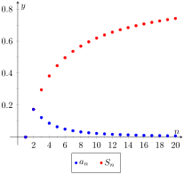

Knowing whether or not a series converges is very important, especially when we discuss Power Series in Section 9.6. Theorems 9.2.5 and Theorem 9.2.11 give criteria for when Geometric and \(p\)-series converge, and Theorem 9.2.21 gives a quick test to determine if a series diverges. There are many important series whose convergence cannot be determined by these theorems, though, so we introduce a set of tests that allow us to handle a broad range of series. We start with the Integral Test.
Subsection9.3.1Integral Test
We stated in Section 9.1 that a sequence \(\{a_n\}\) is a function \(a(n)\) whose domain is \(\mathN\text{,}\) the set of natural numbers. If we can extend \(a(n)\) to \(\mathbb{R}\text{,}\) the real numbers, and it is both positive and decreasing on \([1,\infty)\text{,}\) then the convergence of \(\ds \infser a_n\) is the same as \(\ds\int_1^\infty a(x)\, dx\text{.}\)
Theorem9.3.1.Integral Test.
Let a sequence \(\{a_n\}\) be defined by \(a_n=a(n)\text{,}\) where \(a(n)\) is continuous, positive and decreasing on \([1,\infty)\text{.}\) Then \(\ds \infser a_n\) converges, if, and only if, \(\ds\int_1^\infty a(x)\, dx\) converges.
We can demonstrate the truth of the Integral Test with two simple graphs. In Figure 9.3.2.(a), the height of each rectangle is \(a(n)=a_n\) for \(n=1,2,\ldots\text{,}\) and clearly the rectangles enclose more area than the area under \(y=a(x)\text{.}\) Therefore we can conclude that
Figure9.3.2.Illustrating the truth of the Integral Test
In Figure 9.3.2.(b), we draw rectangles under \(y=a(x)\) with the Right-Hand rule, starting with \(n=2\text{.}\) This time, the area of the rectangles is less than the area under \(y=a(x)\text{,}\) so \(\ds\sum_{n=2}^\infty a_n \lt \int_1^\infty a(x)\, dx\text{.}\) Note how this summation starts with \(n=2\text{;}\) adding \(a_1\) to both sides lets us rewrite the summation starting with \(n=1\text{:}\)
From Equation (9.3.3) we can make the following two statements:
If \(\ds \infser a_n\) diverges, so does \(\ds\int_1^\infty a(x)\, dx\) (because \(\ds \infser a_n \lt a_1 +\int_1^\infty a(x)\, dx\))
If \(\ds \infser a_n\) converges, so does \(\ds\int_1^\infty a(x)\, dx\) (because \(\ds \ds \int_1^\infty a(x)\, dx \lt \infser a_n\text{.}\))
Therefore the series and integral either both converge or both diverge. Theorem 9.2.22 allows us to extend this theorem to series where \(a(n)\) is positive and decreasing on \([b,\infty)\) for some \(b \gt 1\text{.}\) A formal proof of the Integral Test is shown below.
Let \(a(x)=a_x\) be a postive, continuous, decreasing function on \([1,\infty)\text{.}\) We will consider how the partial sums of \(\infser a_n\) compare to the integral \(\int_0^\infty a(x)\, dx \text{.}\) We first consider the case where \(\int_1^{\infty}a(x)\, dx\) diverges.
Suppose that \(\int_1^{\infty}a(x)\, dx\) diverges. Using Figure 9.3.2.(a), we can say that \(S_n=\sum_{i=1}^{n}a_i\gt \int_1^{n+1}a(x)\, dx\text{.}\) If we let \(n \to \infty\) in this inequality, we know that \(\int_1^{n+1}a(x)\, dx\) will get arbitrarily large as \(n \to \infty\) (since \(a(x) \gt 0\) and \(\int_1^{\infty}a(x)\, dx\) diverges). Therefore we conclude that \(S_n=\sum_{i=1}^{n}a_i\) will also get arbitrarily large as \(n \to \infty\text{,}\) and thus \(\infser a_n\) diverges.
Now suppose that \(\int_1^{\infty}a(x)\, dx\) converges to \(M\text{,}\) where \(M\) is some positive, finite number. Using Figure 9.3.2.(b), we can say that \(0 \lt S_n=\sum_{i=1}^{n}a_i \lt \int_1^{\infty} a(x)\, dx=M\text{.}\) Therefore our sequence of partial sums, \(S_n\) is bounded. Furthermore, \(S_n\) is a monotonically increasing sequence since all of the terms \(a_n\) are positive. Since \(S_n\) is both bounded and monotonic, \(S_n\) converges by Convergent Sequences are Bounded and by Definition 9.2.1, the series \(\infser a_n\) converges as well.
Example9.3.3.Using the Integral Test.
Determine the convergence of \(\ds\infser \frac{\ln(n) }{n^2}\text{.}\) (The terms of the sequence \(\{a_n\} = \{\ln(n) /n^2\}\) and the \(n\)th partial sums are given in Figure 9.3.4.)
Figure 9.3.4 implies that \(a(n) = (\ln(n) )/n^2\) is positive and decreasing on \([2,\infty)\text{.}\) We can determine this analytically, too. We know \(a(n)\) is positive as both \(\ln(n)\) and \(n^2\) are positive on \([2,\infty)\text{.}\) Treating \(a(n)\) as a continuous function of \(n\) defined on \([1, \infty)\text{,}\) consider \(a'(n) = (1-2\ln(n) )/n^3\text{,}\) which is negative for \(n\geq 2\text{.}\) Since \(a'(n)\) is negative, \(a(n)\) is decreasing for \(n\geq 2\text{.}\) We can still use the integral test since a finite number of terms will not affect convergence of the series.

Figure9.3.4.Plotting the sequence and series in Example 9.3.3
Applying the Integral Test, we test the convergence of \(\ds \int_1^\infty \frac{\ln(x) }{x^2}\, dx\text{.}\) Integrating this improper integral requires the use of Integration by Parts, with \(u = \ln(x)\) and \(dv = 1/x^2\, dx\text{.}\)
Since \(\ds \int_1^\infty \frac{\ln(x) }{x^2}\, dx\) converges, so does \(\ds \infser \frac{\ln(n) }{n^2}\text{.}\)
Theorem 9.2.11 was given without justification, stating that the general \(p\)-series \(\ds \infser \frac 1{(an+b)^p}\) converges if, and only if, \(p \gt 1\text{.}\) In the following example, we prove this to be true by applying the Integral Test.
Example9.3.5.Using the Integral Test to establish Theorem 9.2.11.
Let \(a, b\) be real numbers such that \(a\neq 0\) and \(an+b\gt 0\) for all \(n\geq 1\text{.}\) Use the Integral Test to prove that \(\ds \infser \frac1{(an+b)^p}\) converges if, and only if, \(p \gt 1\text{.}\)
This limit converges if, and only if, \(p \gt 1\) so that \(1-p \lt 0\text{.}\) It is easy to show that the integral also diverges in the case of \(p=1\text{.}\) (This result is similar to the work preceding Key Idea 6.8.16.)
Therefore \(\ds \infser \frac 1{(an+b)^p}\) converges if, and only if, \(p \gt 1\text{.}\)
We consider two more convergence tests in this section, both comparison tests. That is, we determine the convergence of one series by comparing it to another series with known convergence.
Subsection9.3.2Direct Comparison Test
Theorem9.3.6.Direct Comparison Test.
Let \(\{a_n\}\) and \(\{b_n\}\) be positive sequences where \(a_n\leq b_n\) for all \(n\geq N\text{,}\) for some \(N\geq 1\text{.}\)
If \(\ds \infser b_n\) converges, then \(\ds \infser a_n\) converges.
If \(\ds \infser a_n\) diverges, then \(\ds \infser b_n\) diverges.
Let \(0\lt a_n\leq b_n\) for all \(n\geq N \geq 1\text{.}\) Note that both partial sums for both series are positive and increasing since the terms of both sequences are positive.
Suppose that \(\ds \infser b_n\) converges, so \(\ds \infser b_n=S\text{,}\) where \(S\) is a finite, positive number. (\(S\) must be positive since \(b_n \gt 0\text{.}\))
Comparing the partial sums, we must have \(\ds \sum_{i=N}^n a_i \leq \sum_{i=N}^n b_i\) since \(a_n\leq b_n\) for all \(n\geq N\text{.}\) Furthermore since \(\ds \infser b_n\) converges to \(S\text{,}\) our partial sums for \(a_n\) are bounded (note that the partial sums started at \(i=N\text{,}\) but a finite number of terms will not affect the boundedness of the partial sums).
Since the sequence of partial sums, \(s_n=\sum_{i=1}^n a_i \) is both monotonically increasing and bounded, we can say that \(s_n\) converges (by Convergent Sequences are Bounded), and therefore so does \(\infser a_n \text{.}\)
Suppose that \(\ds \infser a_n\) diverges, so \(\ds \sum_{i=1}^n a_n=\infty\text{.}\) (We can say that the series diverges to \(\infty\) since the terms of the series are always positive). Comparing the partial sums, we have
Since the limit on the left side diverges to \(\infty\text{,}\) we can say that \(\lim\limits_{n \to \infty}\sum_{i=N}^n b_i\) also diverges to \(\infty\text{.}\)
Example9.3.7.Applying the Direct Comparison Test.
Determine the convergence of \(\ds\infser \frac1{3^n+n^2}\text{.}\)
This series is neither a geometric or \(p\)-series, but seems related. We predict it will converge, so we look for a series with larger terms that converges. (Note too that the Integral Test seems difficult to apply here.)
Since \(3^n \lt 3^n+n^2\text{,}\)\(\ds \frac1{3^n} \gt \frac1{3^n+n^2}\) for all \(n\geq1\text{.}\) The series \(\ds\infser \frac{1}{3^n}\) is a convergent geometric series; by Theorem 9.3.6, \(\ds \infser \frac1{3^n+n^2}\) converges.
Example9.3.8.Applying the Direct Comparison Test.
Determine the convergence of \(\ds\infser \frac{1}{n-\ln(n) }\text{.}\)
We know the Harmonic Series \(\ds\infser \frac1n\) diverges, and it seems that the given series is closely related to it, hence we predict it will diverge.
Since \(n\geq n-\ln(n)\) for all \(n\geq 1\text{,}\)\(\ds \frac1n \leq \frac1{n-\ln(n) }\) for all \(n\geq 1\text{.}\)
The Harmonic Series diverges, so we conclude that \(\ds\infser \frac{1}{n-\ln(n) }\) diverges as well.
The concept of direct comparison is powerful and often relatively easy to apply. Practice helps one develop the necessary intuition to quickly pick a proper series with which to compare. However, it is easy to construct a series for which it is difficult to apply the Direct Comparison Test.
Consider \(\ds\infser \frac1{n+\ln(n) }\text{.}\) It is very similar to the divergent series given in Example 9.3.8. We suspect that it also diverges, as \(\ds \frac 1n \approx \frac1{n+\ln(n) }\) for large \(n\text{.}\) However, the inequality that we naturally want to use “goes the wrong way”: since \(n\leq n+\ln(n)\) for all \(n\geq 1\text{,}\)\(\ds\frac1n \geq \frac{1}{n+\ln(n) }\) for all \(n\geq 1\text{.}\) The given series has terms less than the terms of a divergent series, and we cannot conclude anything from this.
Fortunately, we can apply another test to the given series to determine its convergence.
Subsection9.3.3Limit Comparison Test
Theorem9.3.9.Limit Comparison Test.
Let \(\{a_n\}\) and \(\{b_n\}\) be positive sequences.
If \(\lim\limits_{n\to\infty} \dfrac{a_n}{b_n} = L\text{,}\) where \(L\) is a positive real number, then \(\ds \infser a_n\) and \(\ds \infser b_n\) either both converge or both diverge.
If \(\lim\limits_{n\to\infty} \dfrac{a_n}{b_n} = 0\text{,}\) then if \(\ds \infser b_n\) converges, then so does \(\ds \infser a_n\text{.}\)
If \(\lim\limits_{n\to\infty} \dfrac{a_n}{b_n} = \infty\text{,}\) then if \(\ds \infser b_n\) diverges, then so does \(\ds \infser a_n\text{.}\)
Theorem 9.3.9 is most useful when the convergence of the series from \(\{b_n\}\) is known and we are trying to determine the convergence of the series from \(\{a_n\}\text{.}\)
We use the Limit Comparison Test in the next example to examine the series \(\ds\infser \frac1{n+\ln(n) }\) which motivated this new test.
Example9.3.10.Applying the Limit Comparison Test.
Determine the convergence of \(\ds\infser \frac1{n+\ln(n) }\) using the Limit Comparison Test.
This series is similar to the one in Example 9.3.7, but now we are considering “\(3^n-n^2\)” instead of “\(3^n+n^2\text{.}\)” This difference makes applying the Direct Comparison Test difficult.
Instead, we use the Limit Comparison Test and compare with the series \(\ds\infser \frac1{3^n}\text{:}\)
We know \(\ds\infser \frac1{3^n}\) is a convergent geometric series, hence \(\ds\infser \frac1{3^n-n^2}\) converges as well.
As mentioned before, practice helps one develop the intuition to quickly choose a series with which to compare. A general rule of thumb is to pick a series based on the dominant term in the expression of \(\{a_n\}\text{.}\) It is also helpful to note that factorials dominate exponentials, which dominate algebraic functions (e.g., polynomials), which dominate logarithms. In the previous example, the dominant term of \(\ds\frac{1}{3^n-n^2}\) was \(3^n\text{,}\) so we compared the series to \(\ds \infser \frac1{3^n}\text{.}\) It is hard to apply the Limit Comparison Test to series containing factorials, though, as we have not learned how to apply L'Hospital's Rule to \(n!\text{.}\)
Example9.3.12.Applying the Limit Comparison Test.
Determine the convergence of \(\ds\infser \frac{\sqrt{n}+3}{n^2-n+1}\text{.}\)
We naïvely attempt to apply the rule of thumb given above and note that the dominant term in the expression of the series is \(1/n^2\text{.}\) Knowing that \(\ds \infser \frac1{n^2}\) converges, we attempt to apply the Limit Comparison Test:
Theorem 9.3.9 part (3) only applies when \(\ds\infser b_n\) diverges; in our case, it converges. Ultimately, our test has not revealed anything about the convergence of our series.
The problem is that we chose a poor series with which to compare. Since the numerator and denominator of the terms of the series are both algebraic functions, we should have compared our series to the dominant term of the numerator divided by the dominant term of the denominator.
The dominant term of the numerator is \(n^{1/2}\) and the dominant term of the denominator is \(n^2\text{.}\) Thus we should compare the terms of the given series to \(n^{1/2}/n^2 = 1/n^{3/2}\text{:}\)
Since the \(p\)-series \(\ds\infser \frac1{n^{3/2}}\) converges, we conclude that \(\ds\infser \frac{\sqrt{n}+3}{n^2-n+1}\) converges as well.
We mentioned earlier that the Integral Test did not work well with series containing factorial terms. The next section introduces the Ratio Test, which does handle such series well. We also introduce the Root Test, which is good for series where each term is raised to a power.
Exercises9.3.4Exercises
Terms and Concepts
1.
In order to apply the Integral Test to a sequence \(\{a_n\}\text{,}\) the function \(a(n) = a_n\) must be , and .
2.
T/F: The Integral Test can be used to determine the sum of a convergent series.
3.
What test(s) in this section do not work well with factorials?
4.
Suppose \(\ds \infser[0] a_n\) is convergent, and there are sequences \(\{b_n\}\) and \(\{c_n\}\) such that \(b_n \leq a_n \leq c_n\) for all \(n\text{.}\) What can be said about the series \(\ds \infser[0] b_n\) and \(\ds \infser[0] c_n\text{?}\)
Problems
Exercise Group.
In the following exercises, use the Integral Test to determine the convergence of the given series.
5.
\(\ds \infser \frac{1}{2^n}\)
6.
\(\ds \infser \frac{1}{n^4}\)
7.
\(\ds \infser \frac{n}{n^2+1}\)
8.
\(\ds \sum_{n=2}^\infty \frac{1}{n\ln(n) }\)
9.
\(\ds \infser \frac{1}{n^2+1}\)
10.
\(\ds \sum_{n=2}^\infty \frac{1}{n(\ln(n) )^2}\)
11.
\(\ds \infser \frac{n}{2^n}\)
12.
\(\ds \infser \frac{\ln(n) }{n^3}\)
Exercise Group.
In the following exercises, use the Direct Comparison Test to determine the convergence of the given series; state what series is used for comparison.
13.
\(\ds \infser \frac{1}{n^2+3n-5}\)
14.
\(\ds \infser \frac{1}{4^n+n^2-n}\)
15.
\(\ds \infser \frac{\ln(n) }{n}\)
16.
\(\ds \infser \frac{1}{n!+n}\)
17.
\(\ds \sum_{n=2}^\infty \frac{1}{\sqrt{n^2-1}}\)
18.
\(\ds \sum_{n=5}^\infty \frac{1}{\sqrt{n}-2}\)
19.
\(\ds \infser \frac{n^2+n+1}{n^3-5}\)
20.
\(\ds \infser \frac{2^n}{5^n+10}\)
21.
\(\ds \sum_{n=2}^\infty \frac{n}{n^2-1}\)
22.
\(\ds \sum_{n=2}^\infty \frac{1}{n^2\ln(n) }\)
Exercise Group.
In the following exercises, use the Limit Comparison Test to determine the convergence of the given series; state what series is used for comparison.
23.
\(\ds \infser \frac{1}{n^2 -3n+5}\)
24.
\(\ds \infser \frac{1}{4^n-n^2}\)
25.
\(\ds \sum_{n=4}^\infty \frac{\ln(n) }{n-3}\)
26.
\(\ds \infser \frac{1}{\sqrt{n^2+n}}\)
27.
\(\ds \infser \frac{1}{n+\sqrt{n}}\)
28.
\(\ds \infser \frac{n-10}{n^2+10n+10}\)
29.
\(\ds \infser \sin\big(1/n\big)\)
30.
\(\ds \infser \frac{n+5}{n^3-5}\)
31.
\(\ds \infser \frac{\sqrt{n}+3}{n^2+17}\)
32.
\(\ds \infser \frac{1}{\sqrt{n}+100}\)
Exercise Group.
In the following exercises, determine the convergence of the given series. State the test used; more than one test may be appropriate.
33.
\(\ds \infser \frac{n^2}{2^n}\)
34.
\(\ds \infser \frac{1}{(2n+5)^3}\)
35.
\(\ds \infser \frac{n!}{10^n}\)
36.
\(\ds \infser \frac{\ln(n) }{n!}\)
37.
\(\ds \infser \frac{1}{3^n+n}\)
38.
\(\ds \infser \frac{n-2}{10n+5}\)
39.
\(\ds \infser \frac{3^n}{n^3}\)
40.
\(\ds \infser \frac{\cos(1/n)}{\sqrt{n}}\)
41.
Given that \(\ds \infser a_n\) converges, state which of the following series converges, may converge, or does not converge.
(a)
\(\ds \infser \frac{a_n}n\)
(b)
\(\ds \infser a_n a_{n+1}\)
(c)
\(\ds \infser (a_n)^2\)
(d)
\(\ds \infser na_n\)
(e)
\(\ds \infser \frac{1}{a_n}\)
42.
In this exercise, we explore an approximation method for series to which the Integral Test applies.
(a)
Let \(a(x)\) be a function to which the Integral Test applies, and for which the series \(\infser a_n\) converges.
Let \(R_n = \sum_{n+1}^\infty a_n\) denote the remainder; that is, the difference between \(\infser a_n\) and the \(n\)th partial sum. (Note that \(R_n\) is the size of the error that results if we approximate the series by the \(n\)th partial sum.) Explain why we must have the following inequality:
Estimate the error involved in using the first 12 terms to approximate the series \(\sum_{n=1}^\infty 1/n^4\text{.}\) What is the approximate value of the series?
(c)
How many terms must we take to ensure that the \(n\)th partial sum approximation for \(\infser 1/n^4\) is accurate to 5 decimal places?